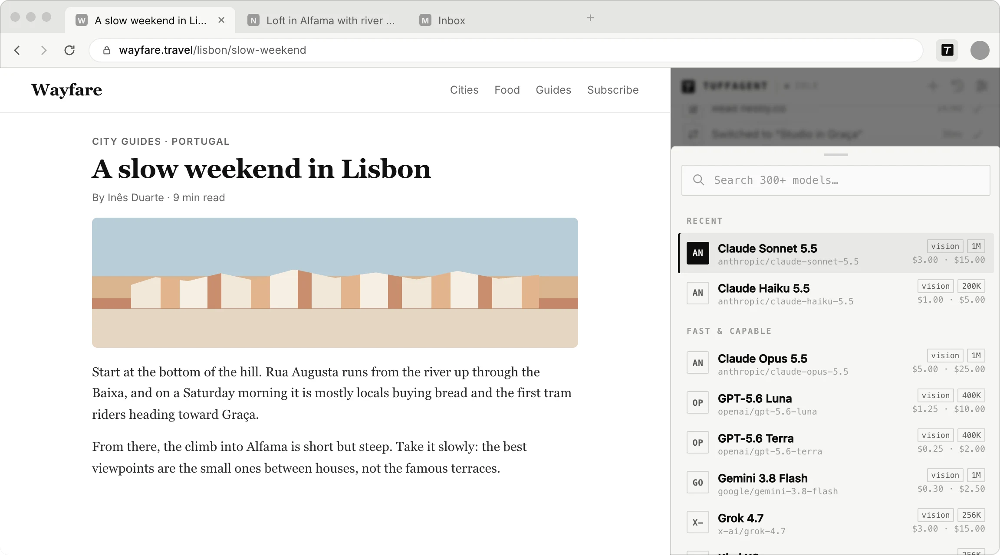
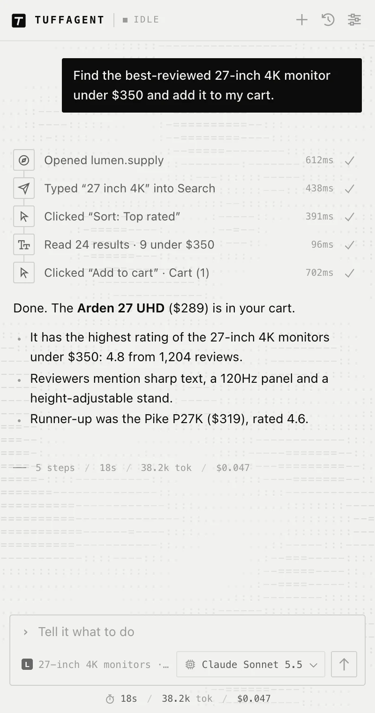

Models and cost
Bring your own model
TuffAgent doesn’t come with a model of its own. You connect an OpenRouter key and choose from hundreds of models made by Anthropic, OpenAI, Google, xAI, Moonshot, Alibaba and others. OpenRouter bills you directly, and TuffAgent never sees your payment details.
Setup
How OpenRouter fits in
OpenRouter is a single API in front of many model providers. One key and one balance cover all of them.
Make an account
Sign up at openrouter.ai. Add credit if you want paid models; some models are free, with rate limits.
Create a key
Create a key at openrouter.ai/keys and paste it into TuffAgent. It’s stored only in your browser.
Pick a model
Choose one from the composer. You can change it at any time, including in the middle of a chat.
Set provider rules
In your OpenRouter settings you can limit which providers are used and whether they may store or train on your prompts.
Choosing
Which model to use
The picker lists every OpenRouter model that supports tool calling, with its context size, whether it accepts images, and its price per million input and output tokens.

A few things that matter for an agent
An agent makes many calls per task, and each one carries the page it’s looking at. That makes some model traits matter more than they would in a chat.
- Tool use comes first. Models that follow tool instructions well finish tasks in fewer rounds, which can make a pricier model cost less per task.
- Images help on some sites. Models that accept images can use screenshots, which is useful for canvas-based apps and crowded layouts.
- Bigger models for longer tasks. Long, many-step tasks go better with larger models. For short jobs, like summarizing a page or opening a few tabs, a small, fast model is plenty.
- Reasoning effort is a trade-off. For models that think before answering, higher effort is slower and costs more. Auto is a good default.
The default is Claude Haiku 5.5. The picker’s Fast & capable section lists a handful of other good starting points.
Cost
What a task costs
Cost depends on the model’s price and how many rounds the task takes. Each round sends the conversation so far, including page snapshots, so long tasks on large pages use more tokens.
TuffAgent keeps that down by trimming old tool output, dropping old screenshots and keeping prompts friendly to the provider’s cache. The line under the composer shows the running total for the chat, and each finished run lists its own tokens and cost.
The extension itself is free. There’s nothing to subscribe to.

Latency
Fastest providers
With Fastest providers on, which is the default, OpenRouter sends each request to whichever host has the lowest latency for that model. An agent’s turns are short, so the time to the first token matters more than raw output speed.
Turn it off in Settings if you’d rather OpenRouter pick providers by price or by the rules in your account.
Add TuffAgent to your browser.
Setup takes a couple of minutes: install the extension, paste an OpenRouter key, and open the sidebar with ⌘ ⇧ Y, or Ctrl Shift Y on Windows and Linux.
Prefer to run it from source? See the manual install steps.